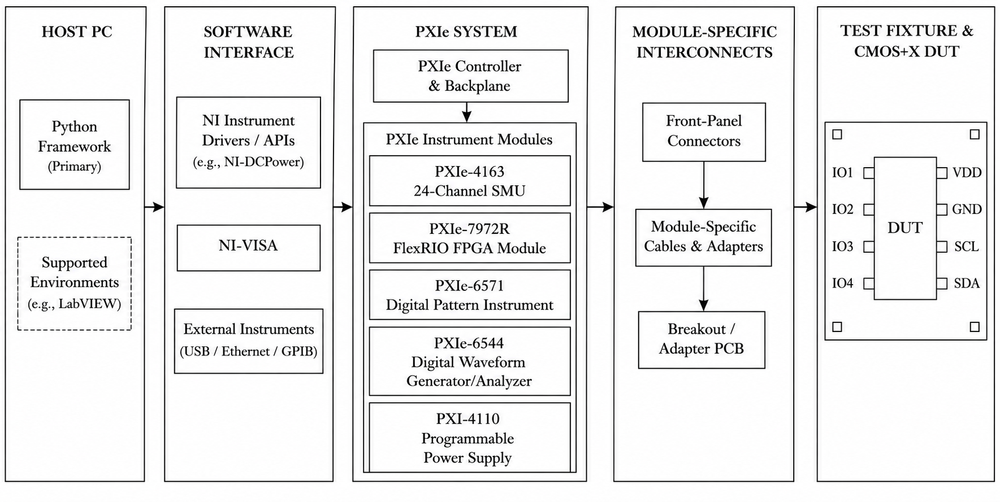
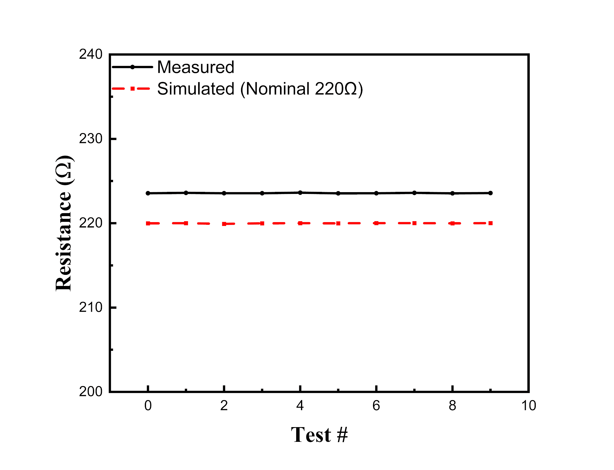

Cleanroom fabrication and electrical test
A post-CMOS test chip needs both a patterned device and a way to reach it electrically. During my Purdue SURF research at NanoX, I designed an RRAM test array and independently built a measurement platform for emerging-device experiments. Working through the process flow helped me connect the features on a die to the contacts, instruments and software needed to test them.
Preparing a device for probing
- Pattern and deposit. I trained in resist coating and development, maskless direct-write lithography on the Heidelberg MLA150, sputtering and pulsed laser deposition. In planning the post-CMOS process, I followed how successive patterning and etching steps define the device while keeping metal pads accessible for probing. My atomic layer deposition training is ongoing.
- Inspect the film and contacts. My characterization training covered optical microscopy, ellipsometry and X-ray diffraction. These methods address different questions about patterned features, film thickness and crystal structure. I also trained on a vacuum probe station and on SMU and PMU instrumentation for electrical tests.
- Configure the experiment. I built a modular Python framework for the NI PXIe platform. A test recipe specifies the instruments, pin mapping, stimulus and limits. The same execution framework can exercise a device model or drive the measurement hardware and record the results.

Checking the measurement path on hardware
I started with a resistor so that I could compare the acquired values with a known nominal value before applying a device-specific sequence. Ten repeated readings through the physical SMU path clustered around 224 Ω for a nominal 220 Ω reference. The plot shows both the repeatability of the readout and its offset from the nominal value.

I also exercised three device-specific sequences in simulation: bipolar RRAM voltage sweeps, pulse-based conductance updates and digital timing for a stochastic signal. These examples let me develop the test recipes while the hardware validation focused on the resistance path.
Research setting
I carried out this work at Purdue’s NanoX Lab under the guidance of Prof. Haitong Li and Zeshu Wang and received SURF with Distinction in summer 2026.